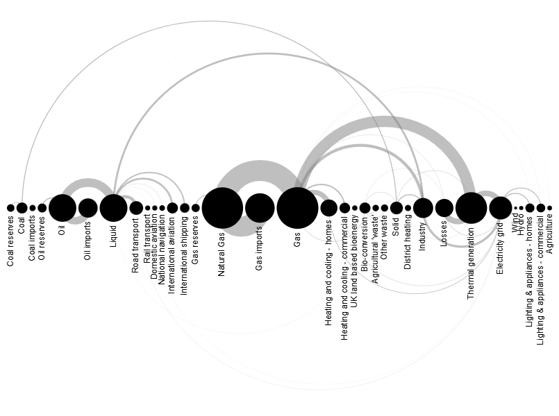

PEC2 Visualización de Datos
Andreu Molina Espi
Descripción
En esta PEC se van a representar los siguientes técnicas de visualización de datos:
Line Chart
Arc Diagram
Beeswarm Plot
Gráficos
Gráfico 1
Arc Diagram
Gráfico 3
Arc Diagram
